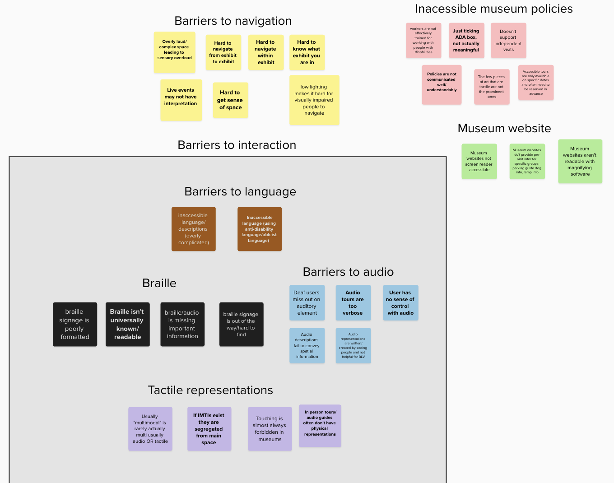
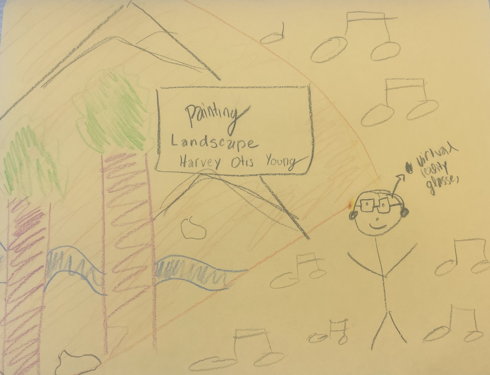
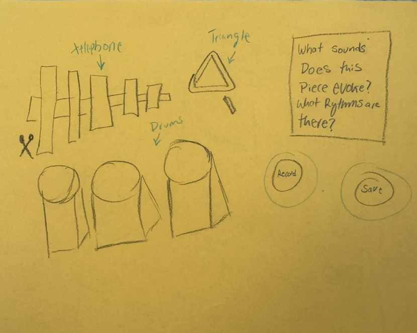
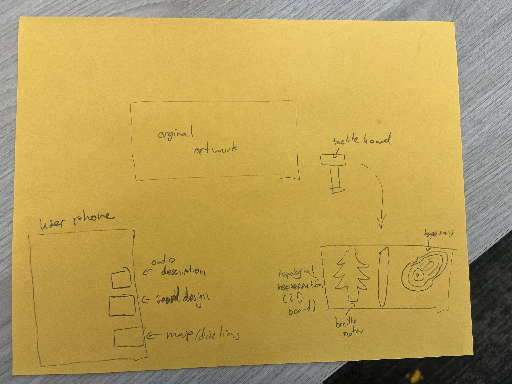
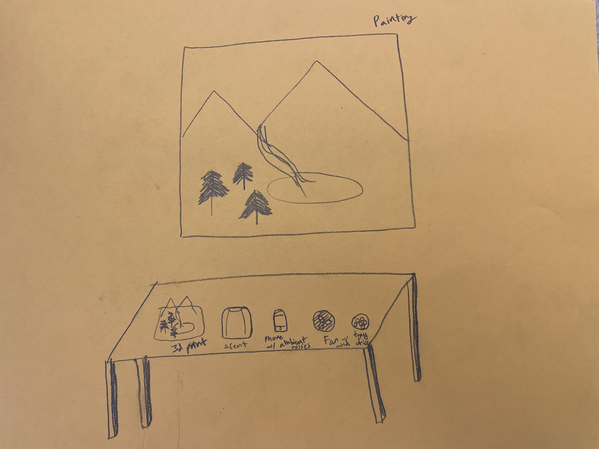
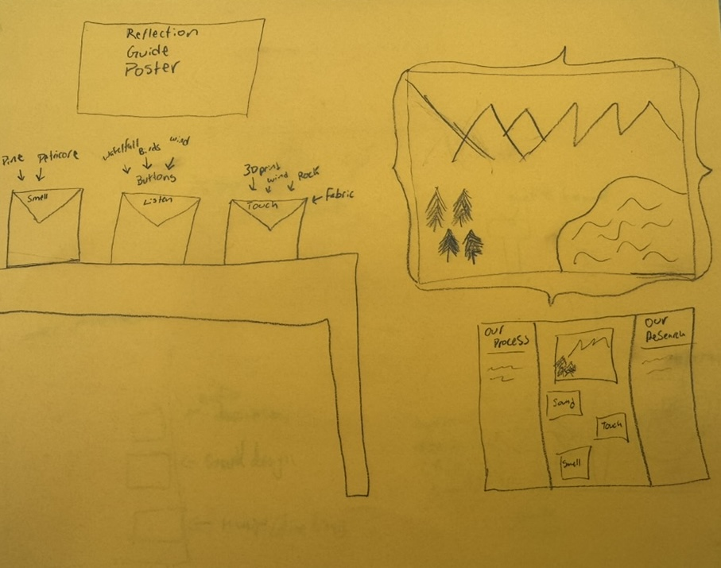
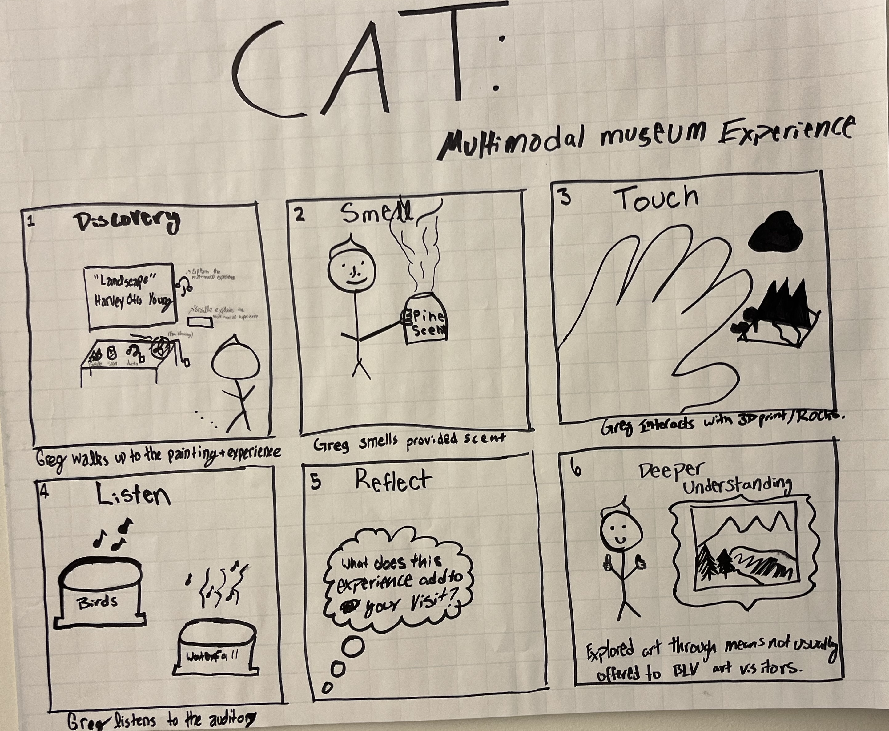

<!DOCTYPE html> 
<html lang="en"></html>
<html>
<head>
  <meta charset="utf-8">
  <title>Multimodal museum accessibility</title>
  <link rel="stylesheet" href="styles.css">
</head>
<body>
<h1> Percepta: A Multimodal Museum Experience</h1>
<h3>Mission statement: </h3>
<p> We are a group of four: Isaac Greenwald, Evelyn Needham, Leigh Walden, and Cassidy Recker in Professor Koushik's CP341: Accessible User Interfaces course at Colorado College. This page serves
    as our portfolio for our final project. We partnered with the Fine Arts Center (FAC) to design a prototype that makes experiences at the FAC more accessible. Specifically, 
we are focusing on creating an interactive, accessible, multimodal art experience - a way to experience visual art in multiple modalities. This is the painting
</p>
<h2> Need Finding</h2>
<h3>Primary Sources</h3>
<a href="https://www.ucreatewetranslate.com/accessibility-gone-wrong/">Accessibility Gone Wrong: When Museums Fail to Deliver</a><br>
<a href="https://www.aam-us.org/2022/10/21/museum-accessibility-an-art-and-a-science/?gad_source=1&gad_campaignid=10720111097&gbraid=0AAAAACr1NLvpGyvbWKTBiayS5l4wJXGrF&gclid=Cj0KCQjw5ubABhDIARIsAHMighYHAthKTOL56omfZwl8VI06dTNWKwT5aD760eKaWQSzUKtt4FiGBTsaAphEEALw_wcB">Museum Accessibility: An Art and a Science</a><br>
<a href="https://www.mdpi.com/2079-9292/10/3/297">Accessible Visual Artworks for Blind and Visually Impaired People: Comparing a Multimodal Approach with Tactile Graphics</a><br>
<a href="https://dl.acm.org/doi/10.1145/3565066.3609509">Mobile and Multimodal HCI Design Approaches in Museums for People with Impairments</a><br>
<p>We used these sources to learn from first-person accounts of what museum experiences are like for BLV (blind and low vision) people. The average art museum experience for 
    BLV people is not robust - it usually does not include sound interaction, nor tactile, nor olfactory. Art museums rarely offer users the opportunity to work with a 
    piece of art beyond just seeing it, and that is to the disadvantage of all visitors. From these sources, we crafted our affinity diagram with more specific needs grouped into broader themes. These themes were: 
    barriers to navigation, inaccessible museum policies, issues with the museum website, and then barriers to interaction with the subgroups barriers to language, braille, barriers to audio, and tactile representations.
Below is our color-coded affinity diagram. </p>
<div id="affinity" tabindex="0">
    
  </div>
<h2>Sketches</h2>
<p>After this needfinding process, we began brainstorming ideas for our prototypes. We each sketched out solutions individually and then discussed them to finally arrive at a final convergent sketch. </p>
<div id="sketches" tabindex="0">
    <figure>
        
        <figcaption>Evelyn's sketch</figcaption>
    </figure>
    <figure>
        
        <figcaption>Leigh's sketch</figcaption>
    </figure>
    <figure>
        
        <figcaption>Cassidy's sketch</figcaption>
    </figure>
    <figure>
        
        <figcaption>Isaac's sketch</figcaption>
    </figure>
    <figure>
        
        <figcaption>Convergent's sketch</figcaption>
    </figure>
  </div>
  <h3> Storyboard</h3>
  <p>From our convergent sketch for our final prototype, we created a storyboard. This is a six panel storyboard
    showing how a user would interact with our multi-modal solution. </p>
    
<h2>Final Prototype</h2>
<p> Need: pic and vid</p>
</body>

</html>